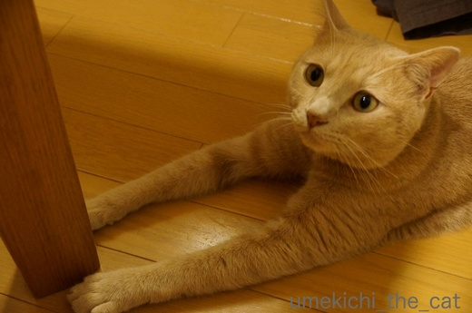
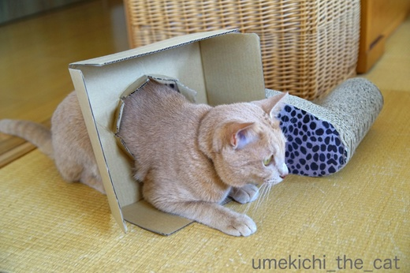
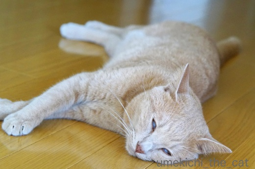
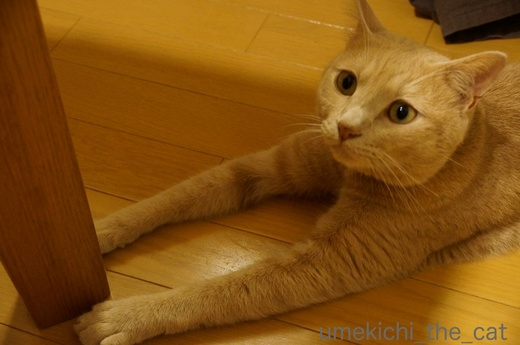
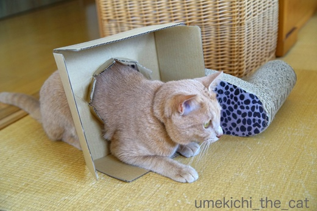
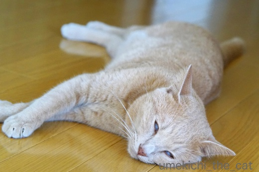

無理、いろいろ [梅吉]
梅吉さんが日々披露してくれる面白行動。
本気に「わしはできる！！」と思っていそうなものもあれば
ニンゲンが勝手にそう解釈しているものもあるのですが・・・・・

![[猫]](https://blog.ss-blog.jp/_images_e/101.gif) このなかにかくれるで！ぜったいにみえへん！！
このなかにかくれるで！ぜったいにみえへん！！

その下半身は梅吉さんでは無いとでも？

このてーぶる もちあげるで〜

おかーさんに助けを求め無い様にw

りべんじや！きょうはとおりぬけたるっ！！

やっぱり無理だったみたい。
というかこの状態気に入ってる？(*>艸<)

じゃあ・・・・・しろめでおひるねや
これは完璧です。最後にキメてくれました。
 ↑ガブッと一押し↑
↑ガブッと一押し↑
連日猛暑日に近く夜は熱帯夜。
もうそろそろ暑さもたくさん・・・と思っていますが夏ならではの楽しみも。
塩水ウニー！
イチジク！！
イチジク大好きなんです。大阪府内では羽曳野、河内長野産の木なり完熟イチジクが手に入ります![[手（チョキ）]](https://blog.ss-blog.jp/_images_e/87.gif)
和歌山産も美味しい。
マンゴー！！！
台湾産なら１個500円くらいで手に入ります。
この夏のもう一つの収穫が
ローソンと台湾の有名かき氷チェーン「アイスモンスター」のコラボ商品、マンゴーアイスバー。
この手の商品はセブンイレブンのが一番好きだったんですが
いまどちらの店のを選ぶ？と聞かれたら断然ローソンのマンゴーアイスバーです。
セブンイレブンのは濃厚で食べ終わった後水が飲みたくなるのが必至なのですが
ローソンのは濃厚でありながらくどくなく思わず「もう一本！」と
言えちゃいそうな食べやすさです。
二層になったアイスの中心部に細かくダイスカットしたマンゴーが入っているのもGoodです！
アイスバーと一緒に発売になったマンゴーロールケーキはもう見かけなくなっちゃいましたが
アイスバーはまだ店頭に並んでいます。
お見かけの際には是非〜＾＾
本気に「わしはできる！！」と思っていそうなものもあれば
ニンゲンが勝手にそう解釈しているものもあるのですが・・・・・


その下半身は梅吉さんでは無いとでも？


おかーさんに助けを求め無い様にw


やっぱり無理だったみたい。
というかこの状態気に入ってる？(*>艸<)

これは完璧です。最後にキメてくれました。
連日猛暑日に近く夜は熱帯夜。
もうそろそろ暑さもたくさん・・・と思っていますが夏ならではの楽しみも。
塩水ウニー！
イチジク！！
イチジク大好きなんです。大阪府内では羽曳野、河内長野産の木なり完熟イチジクが手に入ります
和歌山産も美味しい。
マンゴー！！！
台湾産なら１個500円くらいで手に入ります。
この夏のもう一つの収穫が
ローソンと台湾の有名かき氷チェーン「アイスモンスター」のコラボ商品、マンゴーアイスバー。
この手の商品はセブンイレブンのが一番好きだったんですが
いまどちらの店のを選ぶ？と聞かれたら断然ローソンのマンゴーアイスバーです。
セブンイレブンのは濃厚で食べ終わった後水が飲みたくなるのが必至なのですが
ローソンのは濃厚でありながらくどくなく思わず「もう一本！」と
言えちゃいそうな食べやすさです。
二層になったアイスの中心部に細かくダイスカットしたマンゴーが入っているのもGoodです！
アイスバーと一緒に発売になったマンゴーロールケーキはもう見かけなくなっちゃいましたが
アイスバーはまだ店頭に並んでいます。
お見かけの際には是非〜＾＾

カフェオレ色の梅吉

梅吉 2023年8月10日 永眠


梅吉と出会った譲渡会

犬猫の理由なき殺処分ゼロ
妄想広告
UMEKICHI 光

爆発的に早い！
時々攻撃的！
Thanks to Mr.Boss365
爆発的に早い！
時々攻撃的！
Thanks to Mr.Boss365

ニャンコは頭隠したら隠れてるつもりなんだよねえー＾＾
相変わらずの白目っぷりが最高です！
by じゅらまろ (2017-08-23 15:56)
ムフフ、今日もいっぱい遊んだねー♪(≧∇≦)
思い切り生きると、ぐっすり眠れるという、生き物の正しい姿！
でもでも、オトナは蒸し暑い夜にこんな肴で冷たいシャンパンでもいただきたいなー。。。
by Ginger (2017-08-23 17:05)
子猫の頃にはすっぽり入れたカゴなんですね。自分が見えなきゃ見えない見えない。ビヨーンのおててにカンペキ白目と、今日はサービスたっぷり。ありがとう。夏ならではといえば、東京はやっと暑さが復活して、7月に買ったまま忘れられていたかき氷アイスが嬉しいです。
by zombiekong (2017-08-23 18:01)
頭隠して尻隠さず(*^_^*)
見えてるおちりがなんてプリティーなんでしょう♪
白目でお昼寝！
可愛い姿でお昼寝もあるのに
白目になっているのを見ると
夢中でカメラを構えてしまう私です(;^_^A
マンゴーアイス！
ローソンにもあるのですね！
近所に新しく出来たので
今度行って見ようと思います(*^_^*)
by きぃ (2017-08-23 19:14)
かごに完璧に隠れたつもりなんですね。
でも、完璧にばれてますね。私でもわかります(^^♪
イチジクが好きです。長い事、食べてない様な気がします。
by riverwalk (2017-08-23 19:39)
何でもやってやろうということは素晴らしいですね～でも
失敗する姿も愛らしいですね！
by みぃにゃん (2017-08-23 19:53)
梅吉さん、いろんなことしてくれますね！
虚無僧の如き満足感‥
テーブル持ち上げる？！
リベンジ！‥意外と落ち着く？
そして間違いない～白目でお昼寝☆芸達者ですね～♪
わ、美味しそう‥＾＾
by sana (2017-08-23 20:15)
うにいいですね！
美味しいですよね、食べたいです(^^)
by ma2ma2 (2017-08-23 20:25)
梅吉さん、その下半身はw
テーブルを持ち上げようとしてなんとも言えない表情で見上げてる
梅吉さんに危うく吹きそうにw
本猫さんは真面目にやってると思うのですが、お猫様の行動は
どうしても笑いが(⌒-⌒; )
by ニッキー (2017-08-23 21:06)
梅吉さん、体は大きくなったけれど
子猫のようですね。^^)
たっぷりのウニ、贅沢～～！！^^;
by yes_hama (2017-08-23 21:33)
何度も挑戦することに意義がある♪
虚無僧になったり関取になったり、梅吉さん器用だね～(*^▽^*)
そのうちきっとテーブルも持ち上げると思いますよ！！
マンゴーアイス、ローソンの方が上とは、これは食べないわけにはいきません^^
無花果美味しいですよね～相方が嫌いなので買わなかったんですが・・買って一人で食べよっと。
by ゆきち (2017-08-23 22:07)
梅吉さんの、虚無僧だったり、無理な通り抜けのパフォーマンスは
愛嬌があって、良いですね〜飽きない（笑）
マンゴーアイス、ローソンにもあったとは気づきませんでした。
ローソンのアプリを入れたのに、月1行くか行かないかの頻度です。
10ヶ月も経つのに9ポイント（笑）
確かにセブンイレブンのは濃厚だけど水が飲みたくなります（笑）
by kiki (2017-08-23 22:20)
このテーブル持ち上げるで~ の顔がお気に入りです。ｶﾜ(・∀・)ｲｲ!!
by palpal (2017-08-23 23:02)
箱にはまったまま、カワイイ♪
by マーヤ (2017-08-24 00:37)
半開き、良いですねぇ＾＾
このアイス、お皿の上でほぐして食べても
おいしそうですね。
by ぽちの輔 (2017-08-24 06:50)
梅吉くんが臆することなく何にでもチャレンジできるのは
ちぃさんが見守っていてくれているからなのかも(^-^)
今日出来なかったことも、明日は出来るかも！
おかーさんのびっくりしたお顔がみたいね♪
でも・・・体は小さくならないｗ
by emi (2017-08-24 13:19)
どの梅吉君も可愛いけど
白目フェチとしては、やっぱり最後の白目だな(笑)
テーブル持ち上げられたら困る困るｗｗ
やる気だけでじゅうぶんですよーーー(笑)
by リュカ (2017-08-24 13:39)
テーブルが持ち上がらなくて、
「え！？なんで？？」
という表情がなんとも言えません〜。
「お母さん、上から押さえてる？？」
って感じかな？^o^
私はマンゴーアレルギーっぽくて
食べるとカイカイになります>_<
2回ひどい目にあったのでさすがに学習しました〜
by も〜 (2017-08-24 14:50)
先生の弛まない創造力と探求心にはいつも感心します。
お元気ですか？！＾＾
by KENT0mg (2017-08-25 10:59)
じゅらまろさん＞お尻見えてますよ！って触っても
「見えてないんだから触られてない！」という顔しますよ〜ww
白目の夏は継続中だよ！！
Gingerさん＞ムフフフ(〃ω〃)蒸し暑い夜には泡が美味しいですよね！
ウニなので日本酒飲んじゃいましたけどーＯ(≧▽≦)Ｏ
zombiekongさん＞関東は寒いお盆休みでしたね。
お盆休みが明けた途端に暑くなって・・・
休みにあれこれしようと思っていた人たちが可哀想だー。
我が家付近は暑すぎて途中で溶けちゃうのでアイスを買って来ることすら
出来なくなっちゃいました^^;
きぃさん＞変な顔の時こそシャッターチャンスですよねー＾＾
私も最近白目ばっかり撮っているのでいざ可愛い顔の写真・・・
と探すとまともな写真がなくて困る時があります^^;
マンゴーアイス、是非是非！！
riverwalkさん＞本にゃんは完璧に隠れているつもりなので
お付き合いして「梅吉〜！どこ〜〜〜！！」と探してあげなければなりません。
梅吉はそんな飼い主の様子をワクワクしながら伺っている様です(*>艸<)
札幌ではデパ地下の高〜〜いイチジクしかなく、なかなか食べられなかったのですが
関西はイチジク天国！嬉しいです！！
みぃにゃんさん＞トライ＆エラー・・・・・なんて尊い言葉なんでしょう(꒦ິ⌑꒦ີ)
失敗する姿は愛らしく、ブロガーの端くれとしては「あざーす！」です(*>艸<)
sanaさん＞虚無僧！！本当ですね！！梅吉何か「道」を求めていたのかも(*>艸<)
でも求道者になるにはやることが散漫すぎますね・・・・・ww
ma2ma2さん＞うには北海道産ですよー＾＾美味しかったです。
お酒が進んだわ〜〜〜(*>艸<)
ニッキーさん＞見えている下半身「つんつん」しても
わしはいまここにいない。だからかんじない！！と主張しておりました(*>艸<)
お猫様、意外に真面目なところが余計に面白いですよねww
yes_hamaさん＞永遠の少年、梅吉です(*>艸<)
ウニは年に一度の夏の贅沢で〜す。お酒が進みました！！
ゆきちさん＞失敗を恐れないチャレンジ精神溢れる漢、梅吉に
毎日楽しませてもらっている下僕です＾＾
関西はイチジクが安い！美味しい！！のイチジク天国ですよね〜。
今の安い時期にたくさん買ってコンポートにして冬も楽しんでいますよー。
kikiさん＞梅吉、エンターテイナーなので色々やってくれますよ(^_－)☆
我が家からローソンはコンビニとしてはビミョーに遠いので
アイスを持ち帰って家で食べることはできません。
これは出かけたときに駅近くにあったローソンで買って電車のホームで食べました^^;
こんな事を大人がしても誰も変な目で見ない大阪って自由でイイネ！でした＾＾
by ちぃ (2017-08-25 20:00)
palpalさん＞ふふふ(〃ω〃)がぶがぶしている時とは別にゃんの様ですよね＾＾
マーヤさん＞困った顔していますが実は気に入っている様ですよ(*>艸<)
ぽちの輔さん＞梅吉得意の半開き半目です＾＾
あ、溶けても再形成（？）出来そうですね！！閃きました〜(๑˃̵ᴗ˂̵)و
emiさん＞確かに！もう梅吉がいたずらしても大きな気持ちで笑って見ていられる
というか、
すっかり（ニンゲン二人が）飼いならされてしまった感のある我が家です＾＾
おかーさんのびっくりした顔、毎日何かしでかすのでもう見慣れているかも〜〜(*>艸<)
リュカさん＞もう！！リュカさんったら白目好き！！！
梅吉の白目楽しんでくれてありがとーーーＯ(≧▽≦)Ｏ
も〜さん＞あら、ウルシがダメな方ですか？
弱い方は漆器でもかぶれるので要注意かもしれませんね。
テーブルを持ち上げようとしている梅吉、視線を感じて見ると
こんな顔で見上げてました(*>艸<)
KENT0mgさん＞どうぞ、梅吉のことを「求道者」とお呼びくださいm(_ _)m
僻地の島流し、サバイブされる日を首を長くしてお待ちしておりますよ〜。
by ちぃ (2017-08-25 20:46)